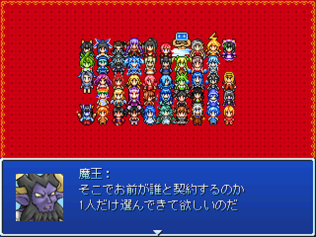

| No.19 | MGC1/48 恋愛総選挙 |
 |
|
| 提出済 10.1MB 最終更新：04/30 感想掲示板 | |
| 作者 | でもたまに居場所とか見失うななめこ |
| ジャンル | 究極の具現化恋愛妄想ゲーム（CERO：C） |
| ツクール | 2000 |
| 配信／投稿 | 全会一致で可決 |
| 作者コメント | |
|
あなたは、愛する1人の具現化のために、他の47人を犠牲に出来ますか…？ 殺るか殺られるか、これぞ究極（！）の命懸け恋愛妄想ゲーム！ 本作はMGC48の48名が「アナタのこと大好き」という夢のような状況でゲームが始まります。（約1名を除く） …ただし、プレイヤーが選ぶことが出来る魔法具現化は48人の中からたった1人。 アナタはラブラブな48人の魔法具現化のうち、47人を容赦なくSATSUGAIして、ただ1人を選ぶ事ことが出来ますか…？ ただしプレイヤーはダーエロです。 ED数 48+αとの話。 | |
| 管理人コメント | |
| ウィンドⅠの攻略が一番難しそうなルール | |